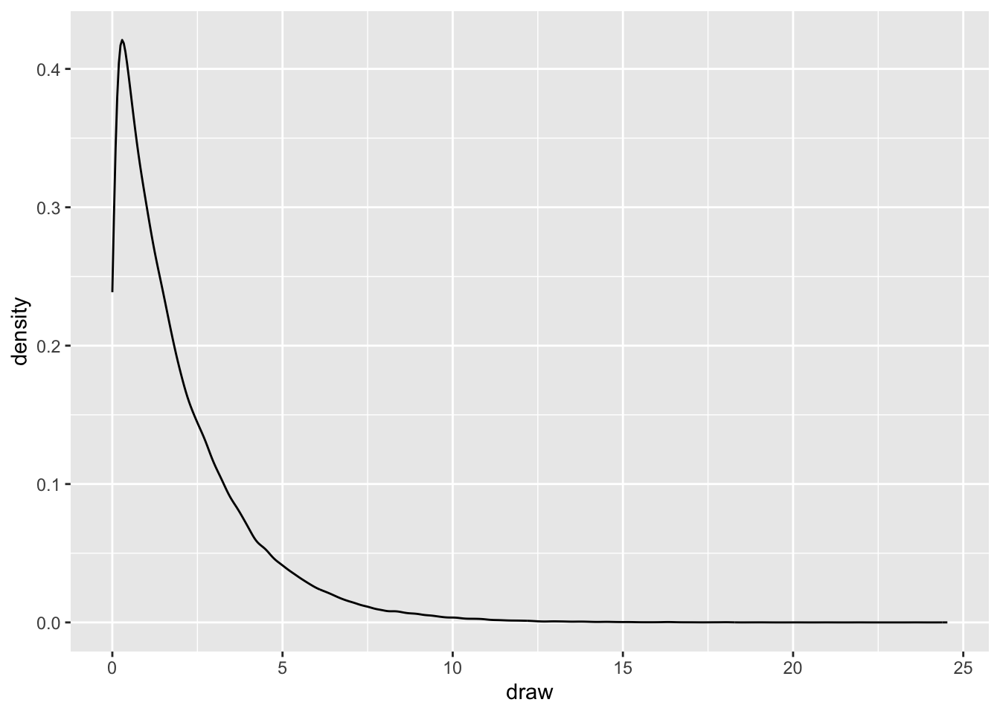
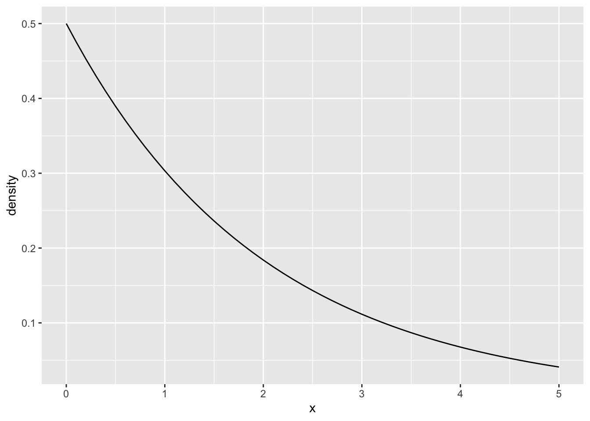

library(tidyverse)
library(brms)
library(cmdstanr)
library(tidybayes)
library(here)Instructions
Complete the following exercises. The basics will get you used to fitting models and getting model predictions using brms with default priors. The advanced questions will get you to focus more on determining your priors with the help of prior predictive checks and evaluating your models based on the prior and posterior predictive checks.
Load in the key packages.
Basics
Load it in using this code and investigate the column names.
dat <- read_csv("https://raw.githubusercontent.com/gpwilliams/bi_loneliness/main/data/cleaned-results.csv") |>
janitor::clean_names() |>
drop_na(brs, wemwbs)
glimpse(dat)Rows: 24
Columns: 22
$ pid <chr> "P01", "P02", "P03", "P04", "P05", "P06", "…
$ wemwbs <dbl> 43, 37, 35, 39, 23, 56, 60, 49, 63, 61, 51,…
$ djg <dbl> 3, 1, 3, 3, 5, 0, 2, 6, 2, 4, 3, 1, 3, 2, 6…
$ single_item <dbl> 1, 2, 1, 1, 2, 1, 1, 2, 1, 4, 4, 1, 2, 2, 4…
$ ucla <dbl> 6, 8, 5, 6, 6, 3, 3, 7, 5, 8, 9, 3, 9, 6, 5…
$ brs <dbl> 4.166667, 3.333333, 1.833333, 3.666667, 2.1…
$ gender <chr> "M", "M", "F", "M", "M", "M", "M", "M", "M"…
$ age <dbl> 54, 54, 37, 51, 52, 39, 47, 53, 68, 50, 46,…
$ region <chr> "East", "Scotland", "South East", "West Yor…
$ marital_status <chr> "Married", "Married", "Married", "Single", …
$ living_arrangements <chr> "With wife", "With wife", "With husband and…
$ primary_carer <chr> "None", "None", "None", "None", "Wife", "No…
$ employment <chr> "Medically Retired", "Medically Retired", "…
$ bi_date <dbl> 2015, 2018, 2016, 1998, 2013, 2017, 2020, 1…
$ bi_severity <chr> "Mild", "Severe", "Mild", "Moderate", "Seve…
$ single_multiple_impairment <chr> "Multiple", "Multiple", "Multiple", "Single…
$ vision <dbl> 0, 0, 1, 0, 1, 1, 0, 0, 1, 0, 0, 0, 0, 0, 1…
$ speech <dbl> 1, 1, 0, 0, 0, 1, 0, 0, 1, 1, 1, 1, 0, 0, 0…
$ motor <dbl> 0, 1, 1, 0, 0, 1, 1, 0, 1, 1, 1, 1, 0, 0, 0…
$ memory <dbl> 0, 0, 0, 0, 1, 0, 1, 0, 1, 1, 0, 1, 1, 1, 1…
$ cognitive <dbl> 1, 1, 0, 0, 1, 0, 0, 1, 0, 1, 0, 1, 1, 1, 1…
$ pain <dbl> 0, 0, 1, 0, 0, 0, 0, 0, 0, 0, 0, 0, 0, 0, 0…Exercise 1. Comparing Linear Model Estimates
A. Fit the models
Fit a linear model predicting mental wellbeing (wemwbs) from resilience (brs). Fit the same model using brms using default priors. Do you notice any differences in the estimates?
B. Evaluate the Posterior
Conduct a posterior predictive check for the model using 100 draws. Do this again with a histogram of the mean values. Do the same again but this time try using a posterior predictive check of the type “stat_2d” for the minimum and maximum values in the data set.
Exercise 2. Summarising Draws
Use tidybayes to get estimates of the median and 89% credible interval for the effect of brs on wemwbs for the highest and lowest possible BRS values of 1 and 5. Assign the result to bi_draws.
A. Get the median and 50, 80, and 90% credible intervals around the draws.
Explain the pattern of results.
B. Recalculate Exercise 2B but use the 50, 80, and 90% highest density interval (HDI) instead of the credible interval.
Explain any differences to median_hdi().
Exercise 3. Visualising Draws
Get draws across the range of values allowed by the BRS. This ranges from 6-30 divided by 6. Assign the result to bi_draws_range.
A. Plot the draws using the 50%, 80%, and 90% CI.
Visualise the draws with stat_lineribbon(). Change the title of the legend to “Credible Interval”, add in proper titles, and adapt the theme to whatever you prefer. Look into stat_lineribbon() to ensure your point interval is median_ci.
B. Make a Spaghetti Plot
Instead of using stat_lineribbon() which summarises the draws using the stat functions in tidybayes, try using just geom_line() from ggplot2. See http://mjskay.github.io/tidybayes/ for how you might do this. You will have to take a limited number of draws to do this, so avoid reusing bi_draws_range.
Exercise 4. Compare the model to a null model using PSIS-LOO.
Ensure that you look at the loo estimates for each model before you compare them so you can see where the comparisons come from. Which model is preferred and why?
Exercise 5. Refit the Model with Appropriate Priors
A. Using Proper Priors
Fit your model and sample from only the priors. Conduct a prior predictive check. If you’re happy with your priors, fit the model. Justify your prior choice below.
B. Compare Priors
Compare the model fitted with the default priors in Exercise 1 to your model with user-defined priors. Does much change at all? If so, why? If not, why not?
C. Check the Posterior of Your Model
Conduct a posterior predictive check. Do things look OK?
Advanced
Get the data from Williams, G. P., Panayotov, N., & Kempe, V. (2020). How does dialect exposure affect learning to read and spell? An artificial orthography study. Journal of Experimental Psychology: General, 149(12), 2344. In this study we taught people a made-up language either under a “standard” or “dialect” condition where participants either heard the same language “at home” and “in school” or different varieties of the language “at home” and “in school”. Crucially, some words had a dialect variant (shifted_word), some didn’t (no_shift_word), and some were entirely novel to the testing phase so that people had to decode them during testing but had rules that allowed them to be pronounced with the “standard” or “dialect” form of the language (can_shift_word).
In the study we use a more nuanced outcome as our primary measure of learning, the length-normalised Levenshtein edit distance. However, here we’ll use a binomial outcome: whether people got the word correct or not. For simplicity we’ll keep the analysis to the reading task only within the testing block.
data_url <- "https://raw.githubusercontent.com/gpwilliams/levenik/master/02_data/03_study-three/03_cleaned-data/ex_3_cleaned_data.csv"
levenik_data <- read_csv(data_url) |>
# keep only testing block for reading, excluding people who didn't complete it
filter(
block == "TEST",
task == "R",
!participant_number %in% c(144, 177, 273)
) |>
rename(
participant = participant_number,
item = target
) |>
select(
participant,
item,
language_variety,
dialect_words,
lenient_correct
) |>
mutate(
participant = as.factor(participant),
item = as.factor(item),
language_variety = as.factor(language_variety),
dialect_words = as.factor(dialect_words)
) |>
drop_na(lenient_correct)Exercise 6. Fitting a Multilevel Model
A. A Default Bernoulli Model
Fit a multilevel model to the data with lenient_correct as the outcome and with language_variety, dialect_words, and their interaction as fixed effects. Use crossed random effects of participants and items. It is up to you to determine the maximal random effects structure. Set sum-coded contrasts for your variables. Use default priors for now. Ensure that you use an appropriate family for your outcome, such as bernoulli() or binomial().
Tip
The Bernoulli distribution is just a special case of the Binomial with a single trial. For trial level data the Bernoulli family will result in a faster fit than the Binomial with n = 1. Since we’re modelling data on the trial-level here, the Bernoulli is appropriate.
B. Posterior Predictive Checks
Conduct a posterior predictive check of the model. Do things look OK? What about a posterior predictive check of the mean responses?
C. Making Inferences on Posterior Draws
There are three methods for taking draws from a posterior that we might commonly use:
Posterior predictions [using
add_predicted_draws()]: Random draws are taken from the posterior. By default predictions are on the original outcome scale. In this case, in 0s and 1s.Posterior predictions of the linear predictor [using
add_linpred_draws()]: Random draws are made up of linear predictions from the posterior. By default outcomes are on the link scale. In this case, in log odds (also called logits).Posterior predictions from the expected value of the posterior predictive distribution [using
add_epred_draws()]: Random draws are made up of expected values of the posterior. Crucially, this ignores the residual error in the model, so is akin to summarising the fixed effects estimates only. Outcomes are on the outcome scale. In this case, in probabilities.
Compare the three methods of draws, making visualisations of each. For the posterior predictions (i.e. the 0, 1 outcomes) you may need to aggregate the data.
D. Summarising Differences
We’ve visualised the draws posterior in various ways above. But we might be interested in directly comparing certain contrasts to communicate the estimate and uncertainty in the estimate of a group difference. Use the comapre_levels() function from tidybayes to extract the difference between language_variety. Summarise these differences in terms of the mean and 90% credible interval.
Exercise 7. Inappropriate Priors
A. Diagnosing a Poor Model
I have fitted the following model. This takes a while to run, so you can load it from file using the code chunk below the following one.
ex7a_mod <- brm(
lenient_correct ~ 1 + language_variety * dialect_words +
(1 + language_variety + dialect_words | participant) +
(1 + language_variety | item),
data = levenik_data,
family = bernoulli(link = "logit"),
prior = c(
set_prior("normal(40, 1)", class = "Intercept"),
set_prior("normal(30, 1000)", class = "b"),
set_prior("lkj(0.9)", class = "L"),
set_prior("exponential(1)", class = "sd")
),
chains = 4,
cores = 4,
backend = "cmdstanr",
adapt_delta = .3
)
# write to file
write_rds(ex7a_mod, here("data", "bayesian-estimation", "ex7a_mod.rds"))Load the model:
ex7a_mod <- read_rds(here("data", "bayesian-estimation", "ex7a_mod.rds"))Investigate the parameter estimates. What’s wrong with this model?
Investigate the plot of estimates and chains. What’s wrong?
B. Fixing the Model
Fix any issues with the model. This can be focused on fixing inappropriate random effects and using more appropriate priors. Doing so will make the model (a) fit more quickly and (b) settle on sensible estimates with chains that mix well. Visualise any priors you intend to set. To visualise priors, you can use the r_() or d_() distribution functions, e.g.:
random_draws <- tibble(draw = rexp(n = 1e5, rate = 0.5))
ggplot(random_draws, aes(x = draw)) +
geom_density()
Or use the ideal distribution.
# define the range of values
x <- seq(0, 5, by = 0.1) # adjust the range as needed
# calculate the density values
density <- dexp(x, rate = 0.5)
# create a tibble for the plot
ideal_draws <- tibble(x = x, density = density)
# create the plot
ggplot(ideal_draws, aes(x = x, y = density)) +
geom_line()
I set the adapt_delta to 0.3, away from the default 0.8. This increased the sensitivity of the algorithm to potential divergences. You can remove this line of code to return the adapt_delta to the default 0.8.
Visualise Your Priors
Visualise your priors using one of the methods I used above.
Address Issues with Model Specification
Address any issues you saw with the model specification.
Conduct a Prior Predictive Check on Your Improved Model
Conduct a prior predictive check on your improved model.
Refit the Model
Refit the model using your new priors. How do things look?
Conduct a Posterior Predictive Check
Conduct a posterior predictive check of your improved model. How do things look?
Summarise the Model
Summarise the model predictions compared to the default prior model. Does anything change?